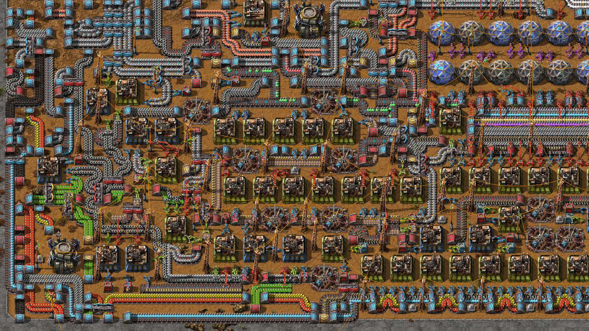

Los jugadores deben crear un diseño eficiente para su fábrica, organizando cuidadosamente la disposición de las instalaciones para optimizar el flujo de recursos. Se construyen y utilizan diversas estructuras y dispositivos, como cintas transportadoras y brazos robóticos, para automatizar la producción y el transporte de recursos. Se busca mejorar la eficiencia y la producción mediante ajustes en la configuración de las máquinas, la logística de transporte y la implementación de diseños más compactos. A medida que la fábrica crece, se expande hacia nuevas áreas y se establecen cadenas de suministro más amplias, a menudo utilizando trenes y colonizando nuevos yacimientos de recursos.
Inicio